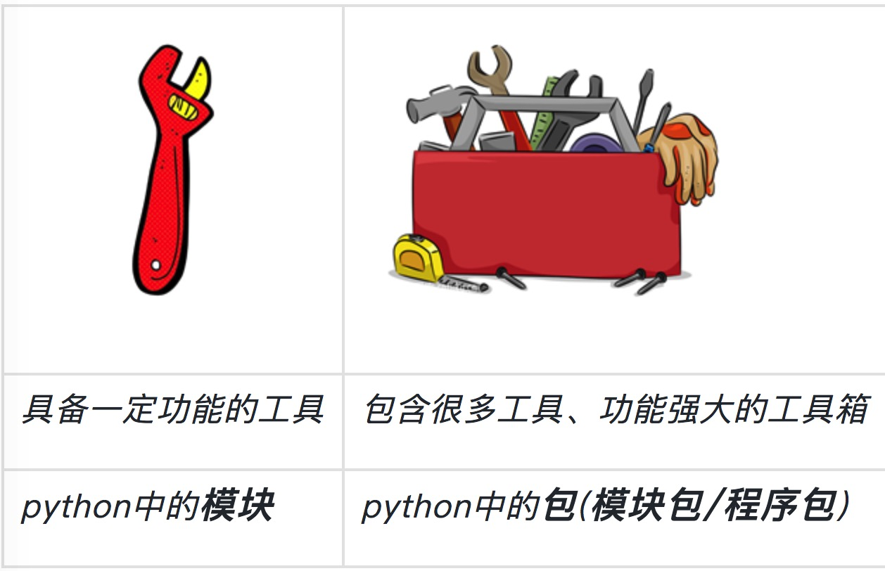
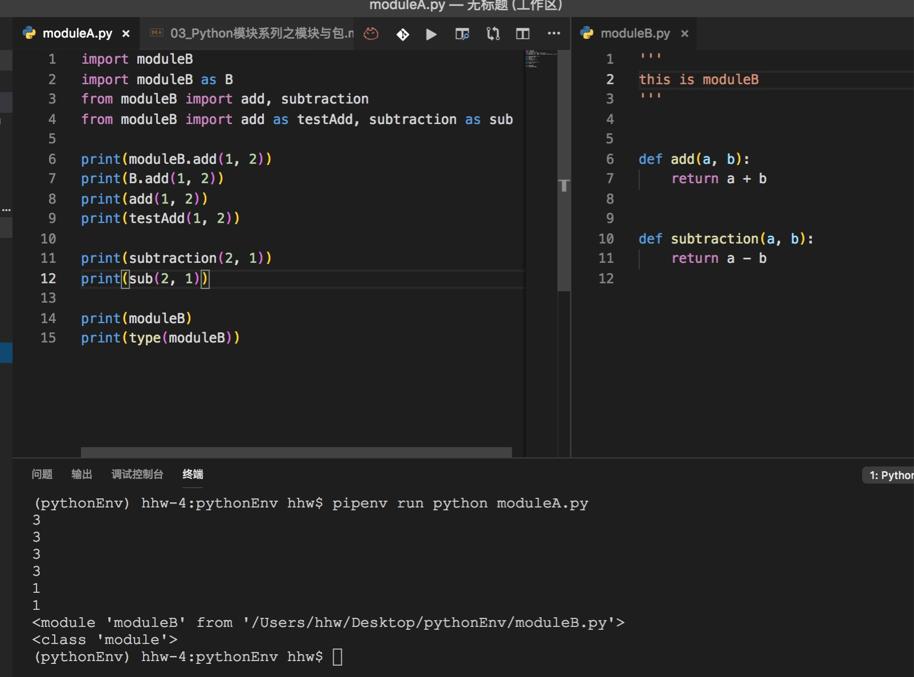
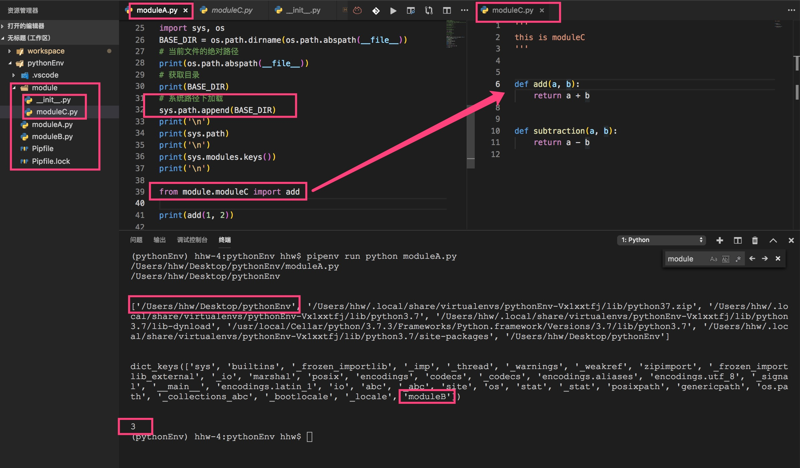
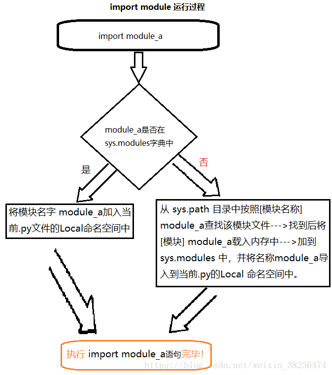
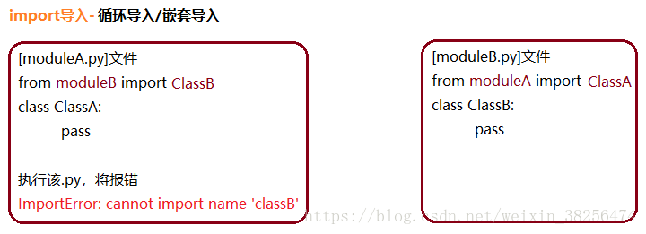

目标
- 区分模块、包；
- ✅掌握引用模块、包
- ✅进阶一点
原本以为今晚可以早早的睡觉，谁知道东西还是蛮多的。。。
第一部分 模块与包
在编程语言中，代码块、函数、类、模块，一直到包，逐级封装，层层调用。

模块(module)
含义
python中每个python文件就是一个模块，每个python文件中，封装类似功能的变量、函数、类型等等，可以被其他的python模块通过import关键字引入重复使用！
分类
- 自定义模块: 如：自己编写的一个py文件；
- 内置模块： 如：os、sys、random等
- 第三方模块：requests等
好处
- 可维护性
- 可复用性
包（package）
含义
包含多个python文件/模块的文件夹，并且文件夹中有一个名称为init.py的特殊声明文件；
作用
可以将大量功能相关的python模块包含起来统一管理，同样也可以被其他模块通过import关键字引入重复使用封装的模块和代码。
示例
1 | package_a |
__init__.py的作用
- Python中package的标识，不能删除（包其实是一个目录，为了和目录做区别，使用了init.py）
- 定义all用来模糊导入(包的调用中介绍)
- 编写Python代码(不建议在init中写python模块，可以在包中在创建另外的模块来写，尽量保证init.py简单）
包名通常为全部小写，避免使用下划线。
第二部分 使用
导入方法
常见的是五种引用方式：
- import
module_name：本质是将module_name解释一遍，并将解释结果赋值给module_name； from module_nameimportname：本质将module_name中的name变量放到当前程序中运行一边，所以调用的时候直接print(name)就可以打印出name变量的值，切记调用模块的时候只需要import模块名，不需要加.py；- import
module_name1, module_name2,...：导入多个模块； - from module_name import name
as nm：为导入模块取别名； - from module_name import * —- (不建议使用该方法)；
用
typescript的很熟悉上边的写的吧；
模块搜索顺序🔍【原理看第三部分】
不管你在程序中执行了多少次import，一个模块只会被导入一次，顺序如下：
import module_name ---> module_name.py ---> module_name.py的路径--->sys.path
- 当前执行脚本所在目录
- Python的安装目录
- Python安装目录里的site-packages目录
示例一 同级目录

这个示例很简单，但已经把引用的使用罗列清楚了，因为Python不需要export。不像typescript那样有导入就有导出，所以，我们已经引用模块了。
至于如何自定义个包，发布到GitHub，让后让别人用，我想那是不是现在关心的。
示例二 他级目录
工作区目录结构如下，实现moduleA引用文件夹module下的moduleC
1 | . |
网上有很多实现的例子，但是，为何那样写？
还是再开个第三部分吧
第三部分 深入理解引用
摘录自：Python 3.x可能是史上最详解的【导入（import）】
Python运行机制
理解Python在执行import语句（导入内置（Python自个的）或第三方模块（已在sys.path中））时，进行了啥操作？
- 创建一个新的、空的module对象（它可能包含多个module）；
- 将该module对象 插入sys.modules中；
- 装载module的代码（如果需要，需先编译）；
- 执行新的module中对应的代码。
第二步涉及一个概念—sys.modules
官网解释
sys.modules是一个 将模块名称（module_name）映射到已加载的模块（modules） 的字典。可用来强制重新加载modules。Python一启动，它将被加载在内存中。
当我们导入新modules，sys.modules将自动记录下该module；当第二次再导入该module时，Python将直接到字典中查找，加快运行速度。
它是个字典，故拥有字典的一切方法，如sys.modules.keys()、sys.modules.values()、sys.modules[‘os’]。但请不要轻易替换字典、或从字典中删除某元素，将可能导致Python运行失败。
1 | import sys |
导入分类
- 相对导入： 同一目录下，如第二部分的实例
- 绝对导入： 如下侧，不同目录的导入
import分类
- “标准”import，顶部导入;
- 嵌套import
- 顺序导入-import
- 循环导入/嵌套导入-import
“标准”import，顶部导入
在 moduleA 中引用 moduleC
1 | . |
1 | ''' |


嵌套import
有了上侧以及命名空间的知识，相对下侧图解，就容易理解了。
顺序导入-import

PS：各个模块的Local命名空间的独立的。即：
test模块 import moduleA后，只能访问moduleA模块，不能访问moduleB模块。虽然moduleB已加载到内存中，如需访问，还得明确地在test模块 import moduleB。实际上打印locals()，字典中只有moduleA，没有moduleB。
循环导入/嵌套导入-import

形如from moduleB import ClassB语句，根据Python内部import机制，执行细分步骤：
- 在sys.modules中查找 符号“moduleB”；
- 如果符号“moduleB”存在，则获得符号“moduleB”对应的module对象；
从的 dict__中获得 符号“ClassB”对应的对象。如果“ClassB”不存在，则抛出异常“ImportError: cannot import name ‘classB’” - 如果符号“moduleB”不存在，则创建一个新的 module对象。不过此时该新module对象的 dict 为空。然后执行moduleB.py文件中的语句，填充的 dict 。
总结：from moduleB import ClassB有两个过程，先from module，后import ClassB。

当然将moduleA.py语句 from moduleB import ClassB改为：import moduleB，将在第二次执行moduleB.py语句from moduleA import ClassA时报错：ImportError: cannot import name ‘classA’
解决这种circular import循环导入的方法：
例比：安装无线网卡时，需上网下载网卡驱动；
安装压缩软件时，从网上下载的压缩软件安装程序是被压缩的文件。
方法1—–>延迟导入（lazy import）：把import语句写在方法/函数里，将它的作用域限制在局部。（此法可能导致性能问题）
方法2—–>将from x import y改成import x.y形式
方法3—–>组织代码（重构代码）：更改代码布局，可合并或分离竞争资源。
合并—–>都写到一个.py文件里；
分离–>把需要import的资源提取到一个第三方.py文件中。
总之，将循环变成单向。
How to avoid Python circle import error？
代码布局、（架构）设计问题，解决之道是：将循环变成单向。采用分层、用时导入、相对导入（层次建议不要超过两个）